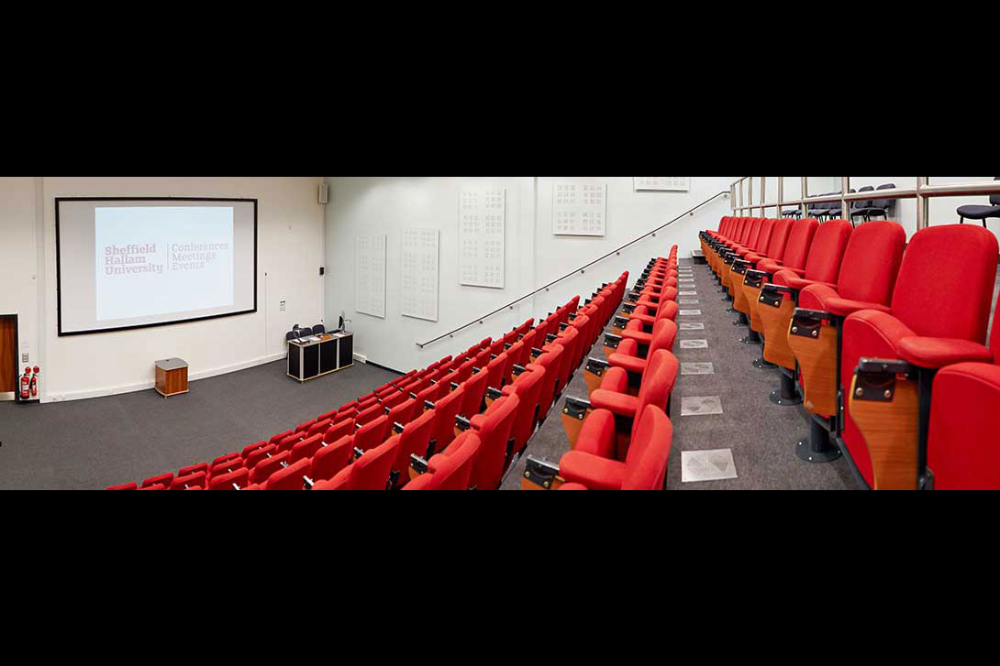

Information For Staff


- News
- - Cantor College recently hosted the Software Engineering student of the year awards
. Short-listed candidates from around the country attended the one day event - Academic Registry
- - For academic regulations, assessment, awards, student records and course validation
- Catering Services
- Contact the Catering Services regarding on and off-site catering
- Financial Services
- The financial team based on the 2nd Floor are responsible for all areas of student finance as well as College budgeting.
- Information Systems Services
- The ISS team delivers the College's computing facilities including all hardware and software. They also run the staff helpdesk.
- Marketing Services
- The Marketing Team will help promote events and new courses. They will help with press release preparation.
- Personnel Services
- All staff pay and conditions enquiries should be directed to the Personnel Services team on the 3rd floor.
- Facilities
- The facilities are responsible for the general care and maintenance of the College. All enquiries via the main helpdesk